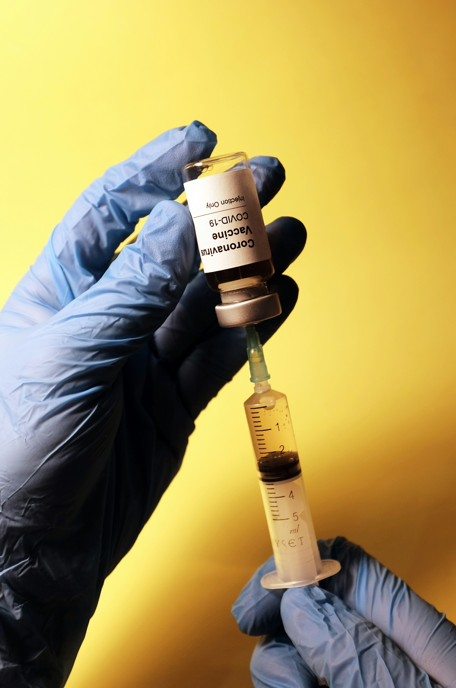

For a recap on the various control measures, refer to ?@sec-control-measures.
Vaccination
For a background on vaccination, refer to ?@sec-vaccination.

- Vaccination is one of the most effective ways to control infectious diseases.
- Conceptually, vaccination works to reduce the number of susceptible individuals, \(S\).
There are different types of vaccination strategies, including:
- pediatric vaccination: vaccinating children to prevent the spread of diseases.
- mass/random vaccination: vaccinating a large proportion of the population.
- targeted vaccination: vaccinating specific groups of individuals, example, healthcare workers.
- pulse vaccination: periodically vaccinating a large number of individuals.
Let’s consider the case of mass/random vaccination.
Compartmental models can be extended to capture this by adding a new compartment, \(V\).
Let’s consider the SEIR model with vaccination.
The Susceptible-Exposed-Infected-Recovered-Vaccinated (SEIRV) Model

- The SEIRV model is simply the SEIR model with a vaccinated compartment, \(V\).
- The vaccinated compartment represents previously susceptible individuals who have been vaccinated and are immune to the disease.
The vaccinated compartment is:
not infectious and does not move to the exposed or infectious compartments.
replenished by the rate of vaccination, \(\eta\).
The model diagram and equations are as follows:
\[\begin{align} \frac{dS}{dt} & = -\beta S I - \eta S \\ \frac{dE}{dt} & = \beta S I - \sigma E \\ \frac{dI}{dt} & = \sigma E - \gamma I \\ \frac{dR}{dt} & = \gamma I \\ \frac{dV}{dt} & = \eta S \end{align}\]
where \(\eta\) is the rate of vaccination.
Numerical simulations
R Practicals
We can use the same approach as the SIR and SEIR models to simulate the SEIRV model.
Modify the
seir.Rmdscript to simulate the SEIRV model.- Link: https://github.com/jamesmbaazam/mppr_r_practicals/
Non-Pharmaceutical Interventions (NPIs)
For a background on non-pharmaceutical interventions, refer to ?@sec-npi.
Conceptually, NPIs usually act to either reduce the transmission rate, \(\beta\) or prevent infected individuals from transmitting.
NPIs like isolation, social distancing and movement restrictions can reduce the transmission rate, \(\beta\), by reducing the contact rate between susceptible and infectious individuals.
Hygiene measures reduce the probability of transmission per contact, thereby reducing the transmission rate, \(\beta\), since \(\beta = c \times p\).
Let’s consider two scenarios that will extend the SIR model to include NPIs:
- Modifying the transmission rate, \(\beta\).
- Preventing infected individuals from transmitting through isolation.
Modifying the transmission rate
NPIs such as social distancing, mask-wearing, and hand hygiene can reduce the transmission rate, \(\beta\).
We can model this by making the transmission rate a function of time, \(\beta (t)\).
The modified SIR model with a reduced transmission rate is as follows:
\[\begin{align*} \frac{dS}{dt} & = -\beta (t) S I \\ \frac{dI}{dt} & = \beta (t) S I - \gamma I \\ \frac{dR}{dt} & = \gamma I \end{align*}\]
The simplest form is to reduce \(\beta\) by an NPI efficacy, say \(\epsilon\).
Assuming the NPI is implemented between \(t_{\text{npi\_start}}\) and \(t_{\text{npi\_end}}\), it means that \(\beta\) remains the same before that period and is modified to \((1- \epsilon)\beta\) during the period of the NPI, where \(0 \leq \epsilon \leq 1\).
With this knowledge, we can define \(\beta (t)\) mathematically as:
\[\begin{equation*} \beta(t) = \begin{cases} \beta & \text{if } t < t_{\text{npi\_start}} \text{ or } t > t_{\text{npi\_end}} \\ (1 - \epsilon) \beta & \text{if } t_{\text{npi\_start}} \le t \le t_{\text{npi\_end}} \end{cases} \end{equation*}\]
R Practicals
- Let’s open the script file
sir_npi.Rand follow along.- Link: https://github.com/jamesmbaazam/mppr_r_practicals/
NPIs as compartments
In the previous example, we retained the SIR model structure and modified the transmission rate.
We can also model NPIs as compartments in the model. This is useful when we want to treat individuals affected by the NPIs differently.
For example, isolation is an NPI that prevents infected individuals from transmitting the disease.
This means that infected individuals in isolation do not contribute to the transmission of the disease and need to be removed from the infected compartment.
Moving isolated individuals to a separate compartment allows us to track them separately in the model and apply relevant parameters.
We can model this by introducing a new compartment, \(Q\), for isolating infected individuals.
Let’s assume, infected individuals move to the isolated compartment at a rate, \(\delta\).
Infected individuals in the isolated compartment do not transmit the disease.
The modified SIR model with isolated is as follows:
\[\begin{align*} \frac{dS}{dt} & = -\beta S I \\ \frac{dI}{dt} & = \beta S I - \gamma I - \delta I \\ \frac{dR}{dt} & = \gamma I + \tau Q \\ \frac{dQ}{dt} & = \delta I - \tau Q \end{align*}\]
where \(\delta\) is the rate at which infected individuals move to the isolated compartment, and \(\tau\) is the rate at which individuals recover from isolation.
R Practicals
- We can use the same approach as the SIR model to simulate the model with isolation.
- Modify the SIR model in
sir.Rmdto incorporate the isolated compartment, \(Q\) and the relevant parameters.- Link: https://github.com/jamesmbaazam/mppr_r_practicals/
Any Questions?